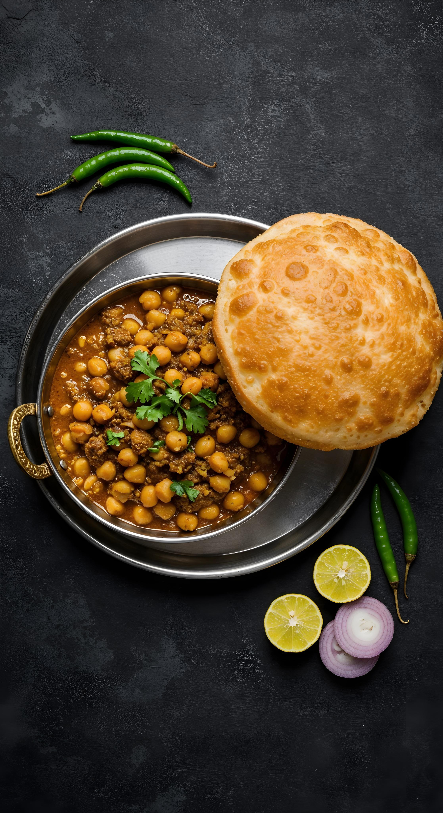

Chole Bhature

Description
Chole Bhature isn’t just food for me… it’s an EMOTION. I’ve had it in every form—street stalls, fancy restaurants, home-cooked, midnight cravings—you name it. And no matter how many times I eat it, I still get that same level of excitement (okay, maybe even more). The spicy, tangy, masaledaar chole paired with hot, puffed-up, golden bhature? Literal heaven on a plate.
There’s just something magical about tearing into a soft bhatura, watching the steam escape, and scooping up those rich, bold chickpeas with a hit of lime and raw onions. UGH. I LOVEEEEEEEE ITTTTTTTTTT. It’s my forever favorite, and this recipe? It’s my go-to comfort, celebration, everything dish. One bite, and you’ll know why I’m completely obsessed.
Ingredients
For Bhatura
- 2 cup maida
- 2 tbsp rava / semolina, fine
- 1 tsp sugar
- ¼ tsp baking soda
- 1 tsp sugar
- ½ tsp salt
- 2 tbsp oil
- ¼ cup curd
- water, for kneading
- oil, for frying
For pressure cooking chole:
- 1 cup chana / chickpea, soaked overnight
- 2 tea bags
- ¼ tsp baking soda
- 1 tsp salt
- 3 cup water
For chhole preparation:
- 2 tbsp oil
- 1 bay leaf
- 1 black cardamom
- 2 pod cardamom
- 1 inch cinnamon
- 1 tsp cumin / jeera
- ½ tsp kasuri methi
- 1 onion, finely chopped
- 1 tsp ginger garlic paste
- ¼ tsp turmeric
- 1 tsp chilli powder
- 1 tsp coriander powder
- ½ tsp cumin powder
- ½ tsp garam masala
- 1 tsp aamchur
- ¼ tsp salt
- 1½ cup tomato puree
- 2 tbsp coriander, finely chopped
For tempering:
- 1 tbsp ghee / clarified butter
- 2 chilli, slit
- ¼ tsp turmeric
- ¼ tsp chilli powder
- ¼ tsp garam masala
Instructions
How to make bhatura recipe:
- firstly, in a large bowl take 2 cup maida, 2 tbsp rava, 1 tsp sugar, ¼ tsp baking soda, 1 tsp sugar, ½ tsp salt and 2 tbsp oil. mix well.
- now add ¼ cup curd and mix well making sure everything is well combined.
- further, add water as required and knead the dough.
- knead to the smooth and soft dough without putting much pressure.
- grease the dough with oil, cover and rest for 2 hours
- after 2 hours, knead the dough slightly.
- pinch a ball sized dough and make a ball without andy cracks.
- roll slightly thick, applying oil to prevent from sticking.
- drop the rolled dough into the hot oil.
- press until the bhature puffs up and splash oil to puff up fully.
- flip over and fry until it turns golden brown.
- finally, drain off the bhatura and is ready to enjoy with chole masala.
How to make chole recipe for batura
- firstly, in a pressure cooker take soaked chana. i have soaked 1 cup chana in enough water for 8 hours.
- add 2 tea bags, ¼ tsp baking soda, 1 tsp salt and 3 cup water.
- cover and pressure cook for 5 whistles. if you do not have tea bags, then you can prepare tea decoction and add to cooker.
- once the pressure releases, open the cooker and discard the tea bags. keep aside.
- in a large kadai, heat 2 tbsp oil, 1 bay leaf, 1 black cardamom, 2 pod cardamom, 1 inch cinnamon, 1 tsp cumin, ½ tsp kasuri methi. saute on low flame until the spices turn aroamtic.
- now add 1 onion, 1 tsp ginger garlic paste and saute until onions turn golden brown.
- add ¼ tsp turmeric, 1 tsp chilli powder, 1 tsp coriander powder, ½ tsp cumin powder, ½ tsp garam masala, 1 tsp aamchur and ¼ tsp salt.
- saute on low flame until the spices turn aromatic.
- further add 1½ cup tomato puree and saute until the oil separates. to prepare tomato puree, i have blended 2½ ripened tomatoes in blender without adding water.
- now add boiled chole and mix well. adjust consistency by adding water if required.
- cover and simmer for 10 minutes, or until chole absorbs all the flavour.
- to prepare the tempering, heat 1 tbsp ghee in a pan.
- add 2 chilli, ¼ tsp turmeri, ¼ tsp chilli powder and ¼ tsp garam masala.
- saute on low flame without burning the spices.
- pour the tempering over the chole masala, add 2 tbsp coriander and mix well.
Home